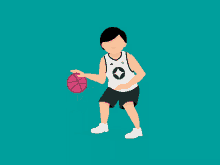
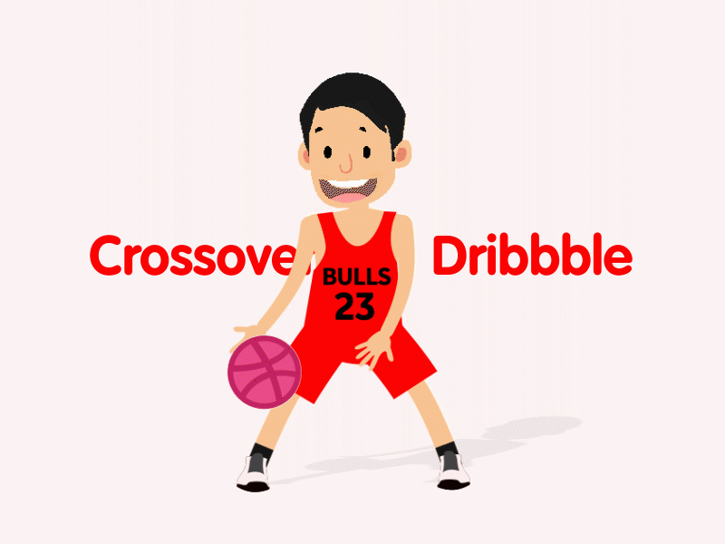

Dribbling is one of the most improtant aspects of basektball. Learning how to dribble will help you get around the court confidently. When the ball is first in your hands you are in a position that is commonly known as the "Triple Threat." This means that you have three options to do with the ball.
There are so many different types of dribble moves players can have in their arsenal.
But first it's best to get the basics down first. To start there will be pound dribbles, which
is just dribbiling the ball with one hand.

Doing this exercise with each hand will make you more comfortable in each hand with the basketball.
The next excercise will be crossovers.

As mentioned before learning how to dribble the basketball effectively is an important aspect of the sport. Usually in a basketball game, the point guard has to learn how to dribble and run the offense for the team. This can correlate with good ball movement, and creating opportunites for yourself and your team to score.